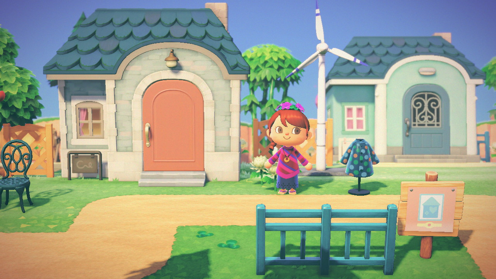
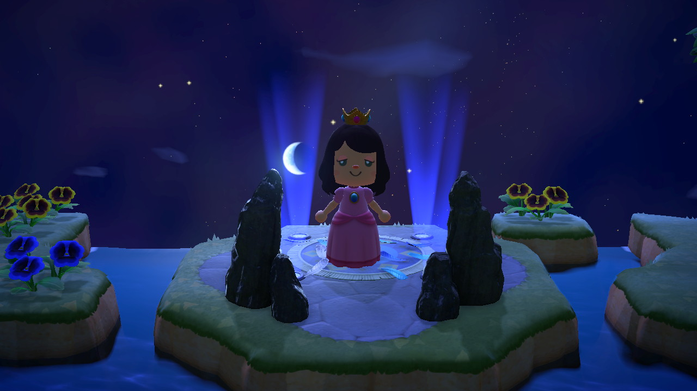
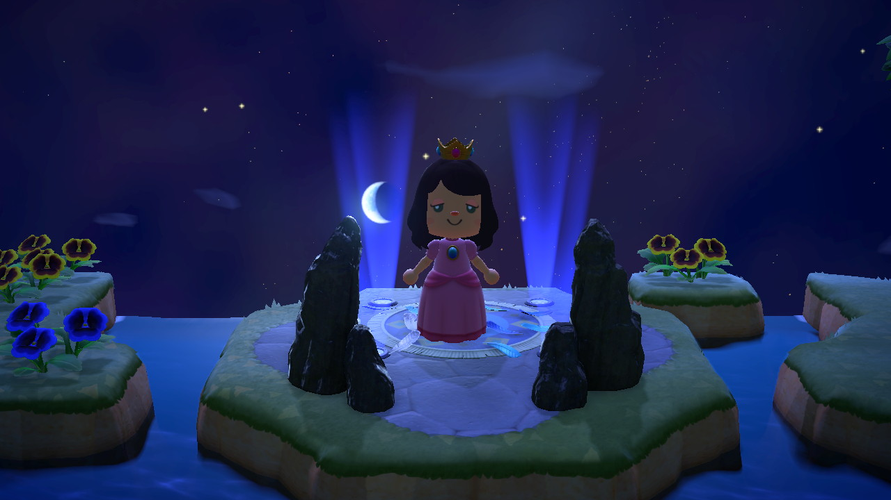

Island 2: Gardenia
Dream Address: DA-0716-9514-0248
Gardenia is my second island in Animal Crossing: New Horizons. Like KENNYYYY! it had no set theme at the beginning, but eventually I made it a more natural-looking island taking a lot of inspiration from Legend of Zelda: Breath of the Wild.
Shrines
 

One of my favorite parts of creating this island was successfully making working replicas of the shrines from Breath of the Wild. The Festivale Stage item was PERFECT to replicate the intricate circle drawings that appear on Breath of the Wild's shrines. There is one activated (blue) and one unactivated (orange). I used two Tall Garden Rocks on either side to replicate the pyramid-like structures in the game. To make them functional, I used the green pipes from the special Mario-themed items in the game. The pipes allow you to travel from one place to another. I tried hiding them as best I could so that you could get the illusion of teleporting from one to another, just like you would in Breath of the Wild. The pipes can lead to other areas of the island too, such as the Hateno lab tower (not pictured) and the Great Fairy Fountain. Visit Gardenia's Dream Address to see how the pipes work yourself!
Great Fairy Fountain and Vah Medoh
This is my Great Fairy Fountain inspired area. The golden bird statue in the back is supposed to be the Divine Beast Vah Medoh, a golden bird that can be seen flying in the distance in BOTW. The Festivale float was the best imitation of a Divine Beast that I could muster with the items I had, and I think it works pretty well.
Other Breath of The Wild Landmarks
Other landmarks I included from Breath of the Wild included the Gerudo Town, Lurelin Village, a stable, and a bokoblin camp.

Festivale, Animal Crossing's equivalent of Mardi Gras/Carnaval, gave me some GREAT items to work with for Gerudo Town and other parts of the island (like the shrines and Great Fairy Fountain). I liked them because they're colorful and fun, which was perfect for BOTW's Arabian-inspired Gerudo Town. I tried to mimic the central marketplace using balloons, colorful booths, and lots of floor decorations. It ended up being one of my favorite spots on the island! The other town I replicated was much smaller and on the other side of my island, where I tried to mimic the small fishing town Lurelin Village.


A Zelda Breath of the Wild themed island wouldn't be complete without at least one stable and Bokoblin hideout, which can be found all over the map in Breath of the Wild. The Bokoblin monster hideout is tiered and has a wanted poster, a bonfire on the bottom level of the structure, and a treasure chest at the top, just like in BOTW. While I couldn't replicate the Bokoblin monsters themselves, I put a little mannequin for a person who's waiting to be saved by Link. The stable is less of an exact replica, but I still tried to achieve the overall effect by incorporating the red and yellow flag decorations and some fake horses.
Gardenia was a fun side island to work on. I did not spend as much time on ths one as I did with my first one, but by this time I had started time traveling which allowed me to get through the game much faster. More familiar with the game and the best ways to make money, this island was fairly quick to build, made easier by not having to terraform as much as I did for KENNYYYY! It was fun to incorporate more nature into this island and try to replicate my favorite areas from Breath of the Wild. Although it's not my favorite island out of the bunch, I am SO PROUD of these recreations and I would love to do more direct recreations in my future builds.
Back to Islands